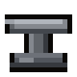
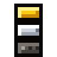
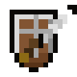

Minecraft Dungeons 2 Tools
Four free tools cover the whole build loop: rank gear in the tier list, plan a full loadout in 配装实验室, look up any item in the database, and pick an edition before you buy.
Launch-week info, last checked . We update this page as patches and new data land.
All tools

配装实验室
Plan a full loadout: weapons, armor, artifacts, talismans and enchantments. See the role it plays and share the link.

梯度榜
Weapons, artifacts, talismans and enchantments ranked S to D, with a one-line reason for every pick.

Gear & Enchant Database
Search every named item by name or effect. Each one shows its grade, Soul cost and cooldown.
标准版 vs 豪华版 Picker
Answer a few questions and get a plain recommendation, plus a full comparison.
Which tool do you need?
You want to know what is worth using
Open the tier list. Weapons, artifacts, talismans and enchantments are ranked S to D, and each placement says why. Anything without enough evidence sits in a separate Unranked yet row instead of getting a guessed tier.
You are putting a build together
Use 配装实验室. Fill the twelve slots, add an enchantment to each weapon and armor piece, and it tells you whether the build leans crowd control, single target, area damage, support or tank. Copy the link to send it to your party. For ideas to start from, read the build plans.
You need the details on one item
Search the gear database. Type an effect such as "souls" or "freeze" to find every item that does it. Buying the game? The 标准版 vs 豪华版 picker weighs the extras for you.
The launch time converter is retired now that the game is out. The launch time write-up keeps the local times. Tools update as patches and new data land.